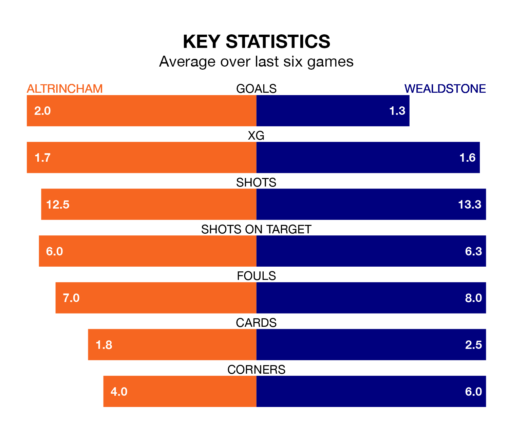

Altrincham host Wealdstone at the J. Davidson Stadium on late Tuesday on the back of three consecutive wins in the National League.
Altrincham have picked up 13 points from their last six games, and they face a Wealdstone side who lost their last match, and have collected eight points from the last possible 18.
With 57 goals in 30 games so far this season, Altrincham are the league's third-highest scorers with 1.9 goals per game. And they are conceding fewer than average, letting in 38 goals at a rate of 1.3 per game.
Wealdstone, meanwhile, are below average scorers, with 1.4 goals per game, compared to a league average of 1.5. They have also conceded 1.4 goals per game.
In the last 10 years, Altrincham and Wealdstone have played each other on seven occasions. Altrincham won two of them, Wealdstone four, and they drew once.
On average, Robins scored 0.9 goals and Wealdstone 1.3 in those matches.
Their last meeting was on September 16, when they played out a 0-0 draw.
Robins are fourth in the table after 30 games, of which they have won 14 and drawn 10, earning 52 points.
The away side are 13 places behind the hosts in 17th, with 10 wins and eight draws putting them on 38 points.
Altrincham's last match was on Saturday, a 3-0 win against Rochdale, with Christopher Conn, Justin Amaluzor and Regan Linney getting the goals for Robins.
Wealdstone lost 1-0 against Maidenhead United last time out, on February 6.
Updated: 09:02 (UTC), 13/02/24